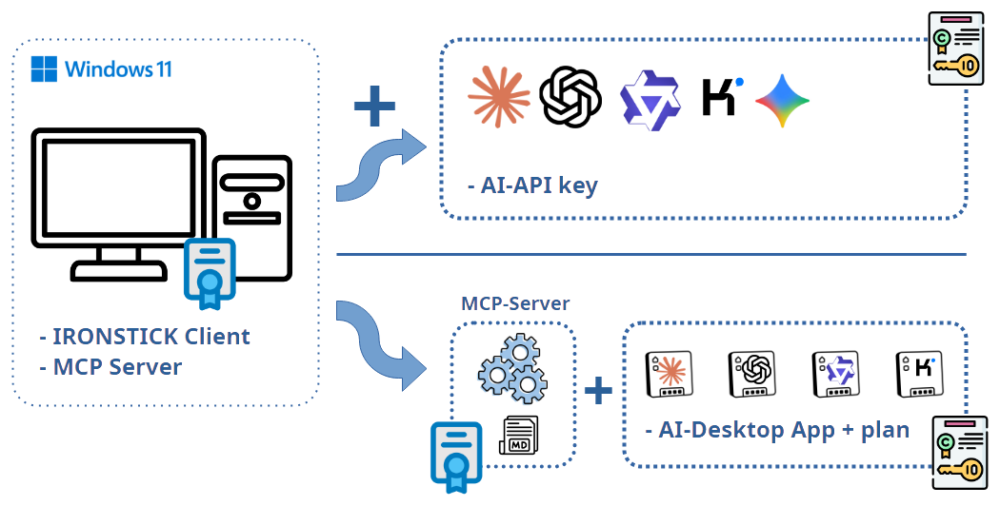
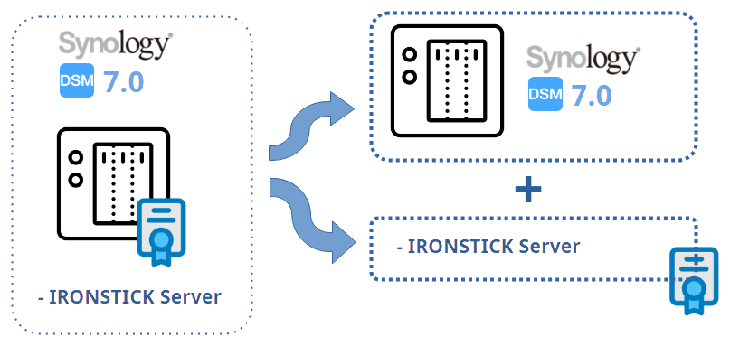

Завантажуйте програмне забезпечення напряму, а ліцензійний ключ запитуйте у нас.
Клієнтський застосунок і модулі Bridge працюють на одному й тому самому робочому місці Windows під одним ліцензійним ключем IRONSTICK. Кожен Bridge ліцензується окремо й розблоковується у вашому ліцензійному ключі клієнтського застосунку, тож окремий ключ Bridge не потрібен. Додатково під'єднується постачальник ШІ.
Головний застосунок для робочого місця: справи, клієнти, строки, документи, робота з доказами та ШІ-чат — усе зберігається локально на вашому робочому місці Windows.
Конектори, які з'єднують настільні застосунки ШІ з вашим клієнтським застосунком через локальний сервер MCP, щоб ШІ міг працювати безпосередньо зі справою. Кожен Bridge потребує ліцензії клієнтського застосунку.

З API-ключем ШІ у клієнтському застосунку доступні всі функції ШІ. Рекомендується поповнення щонайменше на 20 доларів/євро в кожного постачальника. Оплата стягується за фактом використання, тож невикористаний ключ нічого не коштує. Клієнтський застосунок розроблено так, щоб уникати витрат, і він звертається до платного API лише тоді, коли цього потребує завдання. API-ключі вводяться на екрані конфігурації, який містить прямі посилання на сторінки ключів і оплати кожного постачальника.
Настільні застосунки ШІ можна випробувати й без підписки. Підписка — це фіксована щомісячна плата постачальника; якщо однієї підписки не вистачає, постачальники пропонують розширення для додаткової потужності. Наявну підписку можна використовувати як є, не змінюючи її конфігурації. Настільні застосунки під'єднуються двома способами: через Bridge (сервер MCP) або експортуванням файлів інструкцій ШІ. Посилання для завантаження є на екрані конфігурації.

IRONSTICK SERVER, офісний сервер, постачається як готовий пакет Synology (SPK) і встановлюється на ваш NAS у три кліки. Усе, що потрібно, — звичайний Synology NAS, наприклад DS223j приблизно від 180 €. Після встановлення він працює у фоновому режимі; адміністрування відбувається в браузері.
Працює на звичайному Synology NAS і з'єднує кілька робочих місць: спільні справи, бібліотека законів для всієї фірми та централізоване надходження сканів на вашому власному NAS. Він відновлює себе з робочих місць і показує останню резервну копію кожного користувача. Сервер працює повністю всередині мережі вашої фірми, без жодної хмари та без трафіку ШІ. Доступний від двох ліцензій клієнтського застосунку.
ЗавантажитиРобоче місце для оцифрування біля сканера: вхідна пошта й документи скануються централізовано, прив'язуються до справ і завантажуються автоматично. Потребує IRONSTICK SERVER.
ЗавантажитиСкопіюйте шаблон, заповніть поля та надішліть його разом із PDF-копією вашого паспорта або національного посвідчення особи одним із наших способів зв'язку (WhatsApp / Telegram).
Тема: Замовлення ліцензійного ключа – [Ім'я] [Прізвище] Цим я замовляю ліцензійні ключі для IRONSTICK: Адвокатське бюро / практика / компанія (за наявності): [……] Податковий номер / реєстраційний номер компанії (за наявності): [……] Звертання / титул: [……] Ім'я: [……] Прізвище: [……] Вулиця та №: [……] Індекс / місто: [……] Регіон / округ: [……] Країна: [……] Телефон: [……] Мобільний: [……] WhatsApp: [ ] так Електронна пошта для ключа(ів): [……] Мова листування (EN / DE / FR / IT / ES / RO): [……] Дата народження (РРРР-ММ-ДД): [……] Національний ідентифікаційний номер (за наявності): [……] Бажана(і) ліцензія(ї): [ ] IRONSTICK Клієнтський застосунок (базова ліцензія) [ ] Bridge(s) (розблоковуються в ключі клієнтського застосунку) [ ] IRONSTICK SERVER (потребує щонайменше 2 ліцензій клієнтського застосунку) [ ] Central Scan App (потребує щонайменше 1 ліцензії IRONSTICK SERVER) Кожна ліцензія оформлюється на одного іменного користувача (зазначена вище особа). У форматі PDF додаю: • копію мого паспорта або національного посвідчення особи Прошу надіслати мені ліцензійні ключі. З будь-яких запитань ви можете зв'язатися зі мною за телефоном або електронною поштою, зазначеними в цьому замовленні. З повагою [Ім'я] [Прізвище]
Введіть ключ у вікні ліцензії під час запуску клієнтського застосунку; пізніше його можна змінити в конфігурації. Той самий ключ активує ваші ліцензовані Bridges.
Ключ IRONSTICK SERVER вводиться під час налаштування сервера.
Введіть ключ у вікні ліцензії під час запуску Central Scan App.
Для клієнтського застосунку за запитом ви отримаєте безкоштовну 30-денну пробну ліцензію, щоб спокійно оцінити продукт. Візьміть, наприклад, стару справу, крок за кроком внесіть її в IRONSTICK і порівняйте власні введення та оцінки з тими, які дає IRONSTICK. Так ви одразу отримаєте наочне порівняння.
Приблизно за 10 днів до завершення строку дії ліцензії клієнтського застосунку показує нагадування; з IRONSTICK SERVER сторінка адміністрування також показує огляд ліцензій клієнтського застосунку кожного користувача. Замовте поновлення електронною поштою або у WhatsApp. Щойно ваше замовлення буде звірено з даними клієнта й надійде оплата, ви отримаєте новий ліцензійний ключ електронною поштою або у WhatsApp і вставите його в клієнтський застосунок.
Завантажте ironstick-setup-1.0.7.exe і запустіть його. Потім інсталятор завантажить решту компонентів (близько 6,7 ГБ) і покаже перебіг. Під час інсталяції потрібне підключення до Інтернету.